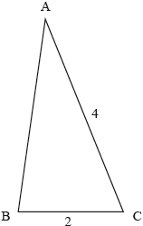

HL Paper 2
The graph of \(y = \ln (5x + 10)\) is obtained from the graph of \(y = \ln x\) by a translation of \(a\) units in the direction of the \(x\)-axis followed by a translation of \(b\) units in the direction of the \(y\)-axis.
Find the value of \(a\) and the value of \(b\).
The region bounded by the graph of \(y = \ln (5x + 10)\), the \(x\)-axis and the lines \(x = {\text{e}}\) and \(x = 2{\text{e}}\), is rotated through \(2\pi \) radians about the \(x\)-axis. Find the volume generated.
Consider \(p(x) = 3{x^3} + ax + 5a,\;\;\;a \in \mathbb{R}\).
The polynomial \(p(x)\) leaves a remainder of \( - 7\) when divided by \((x - a)\).
Show that only one value of \(a\) satisfies the above condition and state its value.
Find \(\int {x{{\sec }^2}x{\text{d}}x} \).
Determine the value of m if \(\int_0^m {x{{\sec }^2}x{\text{d}}x = 0.5} \), where m > 0.
It is given that \(f(x) = 3{x^4} + a{x^3} + b{x^2} - 7x - 4\) where \(a\) and \(b\) are positive integers.
Given that \({x^2} - 1\) is a factor of \(f(x)\) find the value of \(a\) and the value of \(b\).
Factorize \(f(x)\) into a product of linear factors.
Sketch the graph of \(y = f(x)\), labelling the maximum and minimum points and the \(x\) and \(y\) intercepts.
Using your graph state the range of values of \(c\) for which \(f(x) = c\) has exactly two distinct real roots.
The function \(f(x) = 3\sin x + 4\cos x\) is defined for \(0 < x < 2\pi \) .
Write down the coordinates of the minimum point on the graph of f .
The points \({\text{P}}(p,{\text{ }}3)\) and \({\text{Q}}(q,{\text{ }}3){\text{, }}q > p\), lie on the graph of \(y = f(x)\) .
Find p and q .
Find the coordinates of the point, on \(y = f(x)\) , where the gradient of the graph is 3.
Find the coordinates of the point of intersection of the normals to the graph at the points P and Q.
Show that the quadratic equation \({x^2} - (5 - k)x - (k + 2) = 0\) has two distinct real roots for all real values of k .
Express \({x^2} + 4x - 2\) in the form \({(x + a)^2} + b\) where \(a,{\text{ }}b \in \mathbb{Z}\).
If \(f(x) = x + 2\) and \((g \circ f)(x) = {x^2} + 4x - 2\) write down \(g(x)\).
The following graph represents a function \(y = f(x)\), where \( - 3 \le x \le 5\).
The function has a maximum at \((3,{\text{ }}1)\) and a minimum at \(( - 1,{\text{ }} - 1)\).

The functions \(u\) and \(v\) are defined as \(u(x) = x - 3,{\text{ }}v(x) = 2x\) where \(x \in \mathbb{R}\).
(i) State the range of the function \(u \circ f\).
(ii) State the range of the function \(u \circ v \circ f\).
(iii) Find the largest possible domain of the function \(f \circ v \circ u\).
(i) Explain why \(f\) does not have an inverse.
(ii) The domain of \(f\) is restricted to define a function \(g\) so that it has an inverse \({g^{ - 1}}\).
State the largest possible domain of \(g\).
(iii) Sketch a graph of \(y = {g^{ - 1}}(x)\), showing clearly the \(y\)-intercept and stating the coordinates of the endpoints.
Consider the function defined by \(h(x) = \frac{{2x - 5}}{{x + d}}\), \(x \ne - d\) and \(d \in \mathbb{R}\).
(i) Find an expression for the inverse function \({h^{ - 1}}(x)\).
(ii) Find the value of \(d\) such that \(h\) is a self-inverse function.
For this value of \(d\), there is a function \(k\) such that \(h \circ k(x) = \frac{{2x}}{{x + 1}},{\text{ }}x \ne - 1\).
(iii) Find \(k(x)\).
The function f has inverse \({f^{ - 1}}\) and derivative \(f'(x)\) for all \(x \in \mathbb{R}\). For all functions with these properties you are given the result that for \(a \in \mathbb{R}\) with \(b = f(a)\) and \(f'(a) \ne 0\)
\[({f^{ - 1}})'(b) = \frac{1}{{f'(a)}}.\]
Verify that this is true for \(f(x) = {x^3} + 1\) at x = 2.
Given that \(g(x) = x{{\text{e}}^{{x^2}}}\), show that \(g'(x) > 0\) for all values of x.
Using the result given at the start of the question, find the value of the gradient function of \(y = {g^{ - 1}}(x)\) at x = 2.
(i) With f and g as defined in parts (a) and (b), solve \(g \circ f(x) = 2\).
(ii) Let \(h(x) = {(g \circ f)^{ - 1}}(x)\). Find \(h'(2)\).
Let \(f(x) = x{(x + 2)^6}\).
Solve the inequality \(f(x) > x\).
Find \(\int {f(x){\text{d}}x} \).
One root of the equation \({x^2} + ax + b = 0\) is \(2 + 3{\text{i}}\) where \(a,{\text{ }}b \in \mathbb{R}\). Find the value of \(a\) and the value of \(b\).
The polynomial \({x^4} + p{x^3} + q{x^2} + rx + 6\) is exactly divisible by each of \(\left( {x - 1} \right)\), \(\left( {x - 2} \right)\) and \(\left( {x - 3} \right)\).
Find the values of \(p\), \(q\) and \(r\).
A function \(f\) is defined by \(f(x) = {x^3} + {{\text{e}}^x} + 1,{\text{ }}x \in \mathbb{R}\). By considering \(f'(x)\) determine whether \(f\) is a one-to-one or a many-to-one function.
When carpet is manufactured, small faults occur at random. The number of faults in Premium carpets can be modelled by a Poisson distribution with mean 0.5 faults per 20\(\,\)m2. Mr Jones chooses Premium carpets to replace the carpets in his office building. The office building has 10 rooms, each with the area of 80\(\,\)m2.
Find the probability that the carpet laid in the first room has fewer than three faults.
Find the probability that exactly seven rooms will have fewer than three faults in the carpet.
Sketch the graph of \(y = {(x - 5)^2} - 2\left| {x - 5} \right| - 9,{\text{ for }}0 \le x \le 10\).
Hence, or otherwise, solve the equation \({(x - 5)^2} - 2\left| {x - 5} \right| - 9 = 0\).
The probability density function of a continuous random variable \(X\) is given by
\[f(x) = \left\{ {\begin{array}{*{20}{c}} {0,{\text{ }}x < 0} \\ {\frac{{\sin x}}{4},{\text{ }}0 \le x \le \pi } \\ {a(x - \pi ),{\text{ }}\pi < x \le 2\pi } \\ {0,{\text{ }}2\pi < x} \end{array}.} \right.\]
Sketch the graph \(y = f(x)\).
Find \({\text{P}}(X \le \pi )\).
Show that \(a = \frac{1}{{{\pi ^2}}}\).
Write down the median of \(X\).
Calculate the mean of \(X\).
Calculate the variance of \(X\).
Find \({\text{P}}\left( {\frac{\pi }{2} \le X \le \frac{{3\pi }}{2}} \right)\).
Given that \(\frac{\pi }{2} \le X \le \frac{{3\pi }}{2}\) find the probability that \(\pi \le X \le 2\pi \).
The vertical cross-section of a container is shown in the following diagram.

The curved sides of the cross-section are given by the equation \(y = 0.25{x^2} - 16\). The horizontal cross-sections are circular. The depth of the container is \(48\) cm.
If the container is filled with water to a depth of \(h\,{\text{cm}}\), show that the volume, \(V\,{\text{c}}{{\text{m}}^3}\), of the water is given by \(V = 4\pi \left( {\frac{{{h^2}}}{2} + 16h} \right)\).
The container, initially full of water, begins leaking from a small hole at a rate given by \(\frac{{{\text{d}}V}}{{{\text{d}}t}} = - \frac{{250\sqrt h }}{{\pi(h + 16)}}\) where \(t\) is measured in seconds.
(i) Show that \(\frac{{{\text{d}}h}}{{{\text{d}}t}} = - \frac{{250\sqrt h }}{{4{\pi ^2}{{(h + 16)}^2}}}\).
(ii) State \(\frac{{{\text{d}}t}}{{{\text{d}}h}}\) and hence show that \(t = \frac{{ - 4{\pi ^2}}}{{250}}\int {\left( {{h^{\frac{3}{2}}} + 32{h^{\frac{1}{2}}} + 256{h^{ - \frac{1}{2}}}} \right){\text{d}}h} \).
(iii) Find, correct to the nearest minute, the time taken for the container to become empty. (\(60\) seconds = 1 minute)
Once empty, water is pumped back into the container at a rate of \(8.5\;{\text{c}}{{\text{m}}^3}{{\text{s}}^{ - 1}}\). At the same time, water continues leaking from the container at a rate of \(\frac{{250\sqrt h }}{{\pi (h + 16)}}{\text{c}}{{\text{m}}^3}{{\text{s}}^{ - 1}}\).
Using an appropriate sketch graph, determine the depth at which the water ultimately stabilizes in the container.
The seventh, third and first terms of an arithmetic sequence form the first three terms of a geometric sequence.
The arithmetic sequence has first term \(a\) and non-zero common difference \(d\).
Show that \(d = \frac{a}{2}\).
The seventh term of the arithmetic sequence is \(3\). The sum of the first \(n\) terms in the arithmetic sequence exceeds the sum of the first \(n\) terms in the geometric sequence by at least \(200\).
Find the least value of \(n\) for which this occurs.
Let \(z = r(\cos \alpha + {\text{i}}\sin \alpha )\), where \(\alpha \) is measured in degrees, be the solution of \({z^5} - 1 = 0\) which has the smallest positive argument.
(i) Use the binomial theorem to expand \({(\cos \theta + {\text{i}}\sin \theta )^5}\).
(ii) Hence use De Moivre’s theorem to prove
\[\sin 5\theta = 5{\cos ^4}\theta \sin \theta - 10{\cos ^2}\theta {\sin ^3}\theta + {\sin ^5}\theta .\]
(iii) State a similar expression for \(\cos 5\theta \) in terms of \(\cos \theta \) and \(\sin \theta \).
Find the value of \(r\) and the value of \(\alpha \).
Using (a) (ii) and your answer from (b) show that \(16{\sin ^4}\alpha - 20{\sin ^2}\alpha + 5 = 0\).
Hence express \(\sin 72^\circ \) in the form \(\frac{{\sqrt {a + b\sqrt c } }}{d}\) where \(a,{\text{ }}b,{\text{ }}c,{\text{ }}d \in \mathbb{Z}\).
Consider \(f(x) = - 1 + \ln \left( {\sqrt {{x^2} - 1} } \right)\)
The function \(f\) is defined by \(f(x) = - 1 + \ln \left( {\sqrt {{x^2} - 1} } \right),{\text{ }}x \in D\)
The function \(g\) is defined by \(g(x) = - 1 + \ln \left( {\sqrt {{x^2} - 1} } \right),{\text{ }}x \in \left] {1,{\text{ }}\infty } \right[\).
Find the largest possible domain \(D\) for \(f\) to be a function.
Sketch the graph of \(y = f(x)\) showing clearly the equations of asymptotes and the coordinates of any intercepts with the axes.
Explain why \(f\) is an even function.
Explain why the inverse function \({f^{ - 1}}\) does not exist.
Find the inverse function \({g^{ - 1}}\) and state its domain.
Find \(g'(x)\).
Hence, show that there are no solutions to \(g'(x) = 0\);
Hence, show that there are no solutions to \(({g^{ - 1}})'(x) = 0\).
Let \(f(x) = {x^4} + 0.2{x^3} - 5.8{x^2} - x + 4,{\text{ }}x \in \mathbb{R}\).
The domain of \(f\) is now restricted to \([0,{\text{ }}a]\).
Let \(g(x) = 2\sin (x - 1) - 3,{\text{ }} - \frac{\pi }{2} + 1 \leqslant x \leqslant \frac{\pi }{2} + 1\).
Find the solutions of \(f(x) > 0\).
For the curve \(y = f(x)\).
(i) Find the coordinates of both local minimum points.
(ii) Find the \(x\)-coordinates of the points of inflexion.
Write down the largest value of \(a\) for which \(f\) has an inverse. Give your answer correct to 3 significant figures.
For this value of a sketch the graphs of \(y = f(x)\) and \(y = {f^{ - 1}}(x)\) on the same set of axes, showing clearly the coordinates of the end points of each curve.
Solve \({f^{ - 1}}(x) = 1\).
Find an expression for \({g^{ - 1}}(x)\), stating the domain.
Solve \(({f^{ - 1}} \circ g)(x) < 1\).
Let \(f(x) = \left| x \right| - 1\).
(a) The graph of \(y = g(x)\) is drawn below.

(i) Find the value of \((f \circ g)(1)\).
(ii) Find the value of \((f \circ g \circ g)(1)\).
(iii) Sketch the graph of \(y = (f \circ g)(x)\).
(b) (i) Sketch the graph of \(y = f(x)\).
(ii) State the zeros of f.
(c) (i) Sketch the graph of \(y = (f \circ f)(x)\).
(ii) State the zeros of \(f \circ f\).
(d) Given that we can denote \(\underbrace {f \circ f \circ f \circ \ldots \circ f}_{n{\text{ times}}}\) as \({f^n}\),
(i) find the zeros of \({f^3}\);
(ii) find the zeros of \({f^4}\);
(iii) deduce the zeros of \({f^8}\).
(e) The zeros of \({f^{2n}}\) are \({a_1},{\text{ }}{a_2},{\text{ }}{a_3},{\text{ }} \ldots {\text{, }}{a_N}\).
(i) State the relation between n and N;
(ii) Find, and simplify, an expression for \(\sum\limits_{r = 1}^N {\left| {{a_r}} \right|} \) in terms of n.
The function \(f\) is given by \(f(x) = \frac{{3{x^2} + 10}}{{{x^{\text{2}}} - 4}},{\text{ }}x \in \mathbb{R},{\text{ }}x \ne 2,{\text{ }}x \ne - 2\).
Prove that \(f\) is an even function.
Sketch the graph \(y = f(x)\).
Write down the range of \(f\).
Find the set of values of x for which \(\left| {0.1{x^2} - 2x + 3} \right| < {\log _{10}}x\) .
Consider the functions \(f(x) = {x^3} + 1\) and \(g(x) = \frac{1}{{{x^3} + 1}}\). The graphs of \(y = f(x)\) and \(y = g(x)\) meet at the point (0, 1) and one other point, P.
Find the coordinates of P.
Calculate the size of the acute angle between the tangents to the two graphs at the point P.
(a) Simplify the difference of binomial coefficients
\[\left( {\begin{array}{*{20}{c}}
n \\
3
\end{array}} \right) - \left( {\begin{array}{*{20}{c}}
{2n} \\
2
\end{array}} \right),{\text{ where }}n \geqslant 3.\]
(b) Hence, solve the inequality
\[\left( {\begin{array}{*{20}{c}}
n \\
3
\end{array}} \right) - \left( {\begin{array}{*{20}{c}}
{2n} \\
2
\end{array}} \right) > 32n,{\text{ where }}n \geqslant 3.\]
The function \(f(x) = 4{x^3} + 2ax - 7a\) , \(a \in \mathbb{R}\), leaves a remainder of \(−10\) when divided by \(\left( {x - a} \right)\) .
Find the value of \(a\) .
Show that for this value of \(a\) there is a unique real solution to the equation \(f (x) = 0\) .
Write down the quadratic expression \(2{x^2} + x - 3\) as the product of two linear factors.
Hence, or otherwise, find the coefficient of \(x\) in the expansion of \({\left( {2{x^2} + x - 3} \right)^8}\) .
Consider \(f(x) = \ln x - {{\text{e}}^{\cos x}},{\text{ }}0 < x \leqslant 10\).
Sketch the graph of \(y = f(x)\), stating the coordinates of any maximum and minimum points and points of intersection with the x-axis.
Solve the inequality \(\ln x \leqslant {{\text{e}}^{\cos x}},{\text{ }}0 < x \leqslant 10\).
The function f is defined as \(f(x) = - 3 + \frac{1}{{x - 2}},{\text{ }}x \ne 2\).
(i) Sketch the graph of \(y = f(x)\), clearly indicating any asymptotes and axes intercepts.
(ii) Write down the equations of any asymptotes and the coordinates of any axes intercepts.
Find the inverse function \({f^{ - 1}}\), stating its domain.
A Chocolate Shop advertises free gifts to customers that collect three vouchers. The vouchers are placed at random into 10% of all chocolate bars sold at this shop. Kati buys some of these bars and she opens them one at a time to see if they contain a voucher. Let \({\text{P}}(X = n)\) be the probability that Kati obtains her third voucher on the \(n{\text{th}}\) bar opened.
(It is assumed that the probability that a chocolate bar contains a voucher stays at 10% throughout the question.)
It is given that \({\text{P}}(X = n) = \frac{{{n^2} + an + b}}{{2000}} \times {0.9^{n - 3}}\) for \(n \geqslant 3,{\text{ }}n \in \mathbb{N}\).
Kati’s mother goes to the shop and buys \(x\) chocolate bars. She takes the bars home for Kati to open.
Show that \({\text{P}}(X = 3) = 0.001\) and \({\text{P}}(X = 4) = 0.0027\).
Find the values of the constants \(a\) and \(b\).
Deduce that \(\frac{{{\text{P}}(X = n)}}{{{\text{P}}(X = n - 1)}} = \frac{{0.9(n - 1)}}{{n - 3}}\) for \(n > 3\).
(i) Hence show that \(X\) has two modes \({m_1}\) and \({m_2}\).
(ii) State the values of \({m_1}\) and \({m_2}\).
Determine the minimum value of \(x\) such that the probability Kati receives at least one free gift is greater than 0.5.
A function \(f\) is defined by \(f(x) = (x + 1)(x-1)(x-5),{\text{ }}x \in \mathbb{R}\).
Find the values of \(x\) for which \(f(x) < \left| {f(x)} \right|\).
A function \(g\) is defined by \(g(x) = {x^2} + x - 6,{\text{ }}x \in \mathbb{R}\).
Find the values of \(x\) for which \(g(x) < \frac{1}{{g(x)}}\).
Consider the function \(f(x) = \frac{{\sqrt x }}{{\sin x}},{\text{ }}0 < x < \pi \).
Consider the region bounded by the curve \(y = f(x)\), the \(x\)-axis and the lines \(x = \frac{\pi }{6},{\text{ }}x = \frac{\pi }{3}\).
Show that the \(x\)-coordinate of the minimum point on the curve \(y = f(x)\) satisfies the equation \(\tan x = 2x\).
Determine the values of \(x\) for which \(f(x)\) is a decreasing function.
Sketch the graph of \(y = f(x)\) showing clearly the minimum point and any asymptotic behaviour.
Find the coordinates of the point on the graph of \(f\) where the normal to the graph is parallel to the line \(y = - x\).
This region is now rotated through \(2\pi \) radians about the \(x\)-axis. Find the volume of revolution.
Particle A moves such that its velocity \(v{\text{ m}}{{\text{s}}^{ - 1}}\), at time t seconds, is given by \(v(t) = \frac{t}{{12 + {t^4}}},{\text{ }}t \geqslant 0\).
Particle B moves such that its velocity \(v{\text{ m}}{{\text{s}}^{ - 1}}\) is related to its displacement \(s{\text{ m}}\), by the equation \(v(s) = \arcsin \left( {\sqrt s } \right)\).
Sketch the graph of \(y = v(t)\). Indicate clearly the local maximum and write down its coordinates.
Use the substitution \(u = {t^2}\) to find \(\int {\frac{t}{{12 + {t^4}}}{\text{d}}t} \).
Find the exact distance travelled by particle \(A\) between \(t = 0\) and \(t = 6\) seconds.
Give your answer in the form \(k\arctan (b),{\text{ }}k,{\text{ }}b \in \mathbb{R}\).
Find the acceleration of particle B when \(s = 0.1{\text{ m}}\).
Find the values of \(k\) such that the equation \({x^3} + {x^2} - x + 2 = k\) has three distinct real solutions.
When \({x^2} + 4x - b\) is divided by \(x - a\) the remainder is 2.
Given that \(a,{\text{ }}b \in \mathbb{R}\), find the smallest possible value for \(b\).
Find the set of values of \(k\) that satisfy the inequality \({k^2} - k - 12 < 0\).
The triangle ABC is shown in the following diagram. Given that \(\cos B < \frac{1}{4}\), find the range of possible values for AB.

The equation \({x^2} - 5x - 7 = 0\) has roots \(\alpha \) and \(\beta \). The equation \({x^2} + px + q = 0\) has roots \(\alpha + 1\) and \(\beta + 1\). Find the value of \(p\) and the value of \(q\).
Consider the function \(f\) defined by \(f(x) = 3x\arccos (x)\) where \( - 1 \leqslant x \leqslant 1\).
Sketch the graph of \(f\) indicating clearly any intercepts with the axes and the coordinates of any local maximum or minimum points.
State the range of \(f\).
Solve the inequality \(\left| {3x\arccos (x)} \right| > 1\).
A polynomial \(p(x)\) with real coefficients is of degree five. The equation \(p(x) = 0\) has a complex root 2 + i. The graph of \(y = p(x)\) has the x-axis as a tangent at (2, 0) and intersects the coordinate axes at (−1, 0) and (0, 4).
Find \(p(x)\) in factorised form with real coefficients.
In the quadratic equation \(7{x^2} - 8x + p = 0,{\text{ }}(p \in \mathbb{Q})\), one root is three times the other root.
Find the value of \(p\).
Given that the graph of \(y = {x^3} - 6{x^2} + kx - 4\) has exactly one point at which the gradient is zero, find the value of k .
The vectors a and b are such that a \( = (3\cos \theta + 6)\)i \( + 7\) j and b \( = (\cos \theta - 2)\)i \( + (1 + \sin \theta )\)j.
Given that a and b are perpendicular,
show that \(3{\sin ^2}\theta - 7\sin \theta + 2 = 0\);
find the smallest possible positive value of \(\theta \).
The function f is of the form \(f(x) = \frac{{x + a}}{{bx + c}}\), \(x \ne - \frac{c}{b}\). Given that the graph of f has asymptotes x = −4 and y = −2 , and that the point \(\left( {\frac{2}{3},{\text{ }}1} \right)\) lies on the graph, find the values of a , b and c .
The graph of \(y = \ln (x)\) is transformed into the graph of \(y = \ln \left( {2x + 1} \right)\) .
Describe two transformations that are required to do this.
Solve \(\ln \left( {2x + 1} \right) > 3\cos (x)\), \(x \in [0,10]\).
The arithmetic sequence \(\{ {u_n}:n \in {\mathbb{Z}^ + }\} \) has first term \({u_1} = 1.6\) and common difference d = 1.5. The geometric sequence \(\{ {v_n}:n \in {\mathbb{Z}^ + }\} \) has first term \({v_1} = 3\) and common ratio r = 1.2.
Find an expression for \({u_n} - {v_n}\) in terms of n.
Determine the set of values of n for which \({u_n} > {v_n}\).
Determine the greatest value of \({u_n} - {v_n}\). Give your answer correct to four significant figures.
A particle moves in a straight line, its velocity \(v{\text{ m}}{{\text{s}}^{ - 1}}\) at time \(t\) seconds is given by \(v = 9t - 3{t^2},{\text{ }}0 \le t \le 5\).
At time \(t = 0\), the displacement \(s\) of the particle from an origin \(O\) is 3 m.
Find the displacement of the particle when \(t = 4\).
Sketch a displacement/time graph for the particle, \(0 \le t \le 5\), showing clearly where the curve meets the axes and the coordinates of the points where the displacement takes greatest and least values.
For \(t > 5\), the displacement of the particle is given by \(s = a + b\cos \frac{{2\pi t}}{5}\) such that \(s\) is continuous for all \(t \ge 0\).
Given further that \(s = 16.5\) when \(t = 7.5\), find the values of \(a\) and \(b\).
For \(t > 5\), the displacement of the particle is given by \(s = a + b\cos \frac{{2\pi t}}{5}\) such that \(s\) is continuous for all \(t \ge 0\).
Find the times \({t_1}\) and \({t_2}(0 < {t_1} < {t_2} < 8)\) when the particle returns to its starting point.
Prove that the equation \(3{x^2} + 2kx + k - 1 = 0\) has two distinct real roots for all values of \(k \in \mathbb{R}\).
Find the value of k for which the two roots of the equation are closest together.
Farmer Bill owns a rectangular field, 10 m by 4 m. Bill attaches a rope to a wooden post at one corner of his field, and attaches the other end to his goat Gruff.
Given that the rope is 5 m long, calculate the percentage of Bill’s field that Gruff is able to graze. Give your answer correct to the nearest integer.
Bill replaces Gruff’s rope with another, this time of length \(a,{\text{ }}4 < a < 10\), so that Gruff can now graze exactly one half of Bill’s field.
Show that \(a\) satisfies the equation
\[{a^2}\arcsin \left( {\frac{4}{a}} \right) + 4\sqrt {{a^2} - 16} = 40.\]
Find the value of \(a\).
The functions \(f\) and \(g\) are defined by
\[f(x) = \frac{{{{\text{e}}^x} + {{\text{e}}^{ - x}}}}{2},{\text{ }}x \in \mathbb{R}\]
\[g(x) = \frac{{{{\text{e}}^x} - {{\text{e}}^{ - x}}}}{2},{\text{ }}x \in \mathbb{R}\]
Let \(h(x) = nf(x) + g(x)\) where \(n \in \mathbb{R},{\text{ }}n > 1\).
Let \(t(x) = \frac{{g(x)}}{{f(x)}}\).
(i) Show that \(\frac{1}{{4f(x) - 2g(x)}} = \frac{{{{\text{e}}^x}}}{{{{\text{e}}^{2x}} + 3}}\).
(ii) Use the substitution \(u = {{\text{e}}^x}\) to find \(\int_0^{\ln 3} {\frac{1}{{4f(x) - 2g(x)}}} {\text{d}}x\). Give your answer in the form \(\frac{{\pi \sqrt a }}{b}\) where \(a,{\text{ }}b \in {\mathbb{Z}^ + }\).
(i) By forming a quadratic equation in \({{\text{e}}^x}\), solve the equation \(h(x) = k\), where \(k \in {\mathbb{R}^ + }\).
(ii) Hence or otherwise show that the equation \(h(x) = k\) has two real solutions provided that \(k > \sqrt {{n^2} - 1} \) and \(k \in {\mathbb{R}^ + }\).
(i) Show that \(t'(x) = \frac{{{{[f(x)]}^2} - {{[g(x)]}^2}}}{{{{[f(x)]}^2}}}\) for \(x \in \mathbb{R}\).
(ii) Hence show that \(t'(x) > 0\) for \(x \in \mathbb{R}\).
Let the function \(f\) be defined by \(f(x) = \frac{{2 - {{\text{e}}^x}}}{{2{{\text{e}}^x} - 1}},{\text{ }}x \in D\).
Determine \(D\), the largest possible domain of \(f\).
Show that the graph of \(f\) has three asymptotes and state their equations.
Show that \(f'(x) = - \frac{{3{{\text{e}}^x}}}{{{{(2{{\text{e}}^x} - 1)}^2}}}\).
Use your answers from parts (b) and (c) to justify that \(f\) has an inverse and state its domain.
Find an expression for \({f^{ - 1}}(x)\).
Consider the region \(R\) enclosed by the graph of \(y = f(x)\) and the axes.
Find the volume of the solid obtained when \(R\) is rotated through \(2\pi \) about the \(y\)-axis.
The graphs of \(y = {x^2}{{\text{e}}^{ - x}}\) and \(y = 1 - 2\sin x\) for \(2 \leqslant x \leqslant 7\) intersect at points A and B.
The x-coordinates of A and B are \({x_{\text{A}}}\) and \({x_{\text{B}}}\).
Find the value of \({x_{\text{A}}}\) and the value of \({x_{\text{B}}}\).
Find the area enclosed between the two graphs for \({x_{\mathbf{A}}} \leqslant x \leqslant {x_{\text{B}}}\).
(a) Find the solution of the equation
\[\ln {2^{4x - 1}} = \ln {8^{x + 5}} + {\log _2}{16^{1 - 2x}},\]
expressing your answer in terms of \(\ln 2\).
(b) Using this value of x, find the value of a for which \({\log _a}x = 2\), giving your answer to three decimal places.
Given that (x − 2) is a factor of \(f(x) = {x^3} + a{x^2} + bx - 4\) and that division \(f(x)\) by (x − 1) leaves a remainder of −6 , find the value of a and the value of b .
Given that \(f(x) = \frac{1}{{1 + {{\text{e}}^{ - x}}}}\),
find \({f^{ - 1}}(x)\), stating its domain;
find the value of x such that \(f(x) = {f^{ - 1}}(x)\).
The sum of the first 16 terms of an arithmetic sequence is 212 and the fifth term is 8.
Find the first term and the common difference.
Find the smallest value of n such that the sum of the first n terms is greater than 600.
The function \(f\) is defined as \(f(x) = \sqrt {\frac{{1 - x}}{{1 + x}}} ,{\text{ }} - 1 < x \leqslant 1\).
Find the inverse function, \({f^{ - 1}}\) stating its domain and range.
Compactness is a measure of how compact an enclosed region is.
The compactness, \(C\) , of an enclosed region can be defined by \(C = \frac{{4A}}{{\pi {d^2}}}\), where \(A\) is the area of the region and \(d\) is the maximum distance between any two points in the region.
For a circular region, \(C = 1\).
Consider a regular polygon of \(n\) sides constructed such that its vertices lie on the circumference of a circle of diameter \(x\) units.
If \(n > 2\) and even, show that \(C = \frac{n}{{2\pi }}\sin \frac{{2\pi }}{n}\).
If \(n > 1\) and odd, it can be shown that \(C = \frac{{n\sin \frac{{2\pi }}{n}}}{{\pi \left( {1 + \cos \frac{\pi }{n}} \right)}}\).
Find the regular polygon with the least number of sides for which the compactness is more than \(0.99\).
If \(n > 1\) and odd, it can be shown that \(C = \frac{{n\sin \frac{{2\pi }}{n}}}{{\pi \left( {1 + \cos \frac{\pi }{n}} \right)}}\).
Comment briefly on whether C is a good measure of compactness.
The diagram below shows a semi-circle of diameter 20 cm, centre O and two points A and B such that \({\rm{A\hat OB}} = \theta \), where \(\theta \) is in radians.

Show that the shaded area can be expressed as \(50\theta - 50\sin \theta \).
Find the value of \(\theta \) for which the shaded area is equal to half that of the unshaded area, giving your answer correct to four significant figures.
Let \(f(x) = \ln x\) . The graph of f is transformed into the graph of the function g by a translation of \(\left( {\begin{array}{*{20}{c}}
3 \\
{ - 2}
\end{array}} \right)\), followed by a reflection in the x-axis. Find an expression for \(g(x)\), giving your answer as a single logarithm.
Find the acute angle between the planes with equations \(x + y + z = 3\) and \(2x - z = 2\).
Let \(f(x) = \frac{{{{\text{e}}^{2x}} + 1}}{{{{\text{e}}^x} - 2}}\).
The line \({L_2}\) is parallel to \({L_1}\) and tangent to the curve \(y = f(x)\).
Find the equations of the horizontal and vertical asymptotes of the curve \(y = f(x)\).
(i) Find \(f'(x)\).
(ii) Show that the curve has exactly one point where its tangent is horizontal.
(iii) Find the coordinates of this point.
Find the equation of \({L_1}\), the normal to the curve at the point where it crosses the y-axis.
Find the equation of the line \({L_2}\).
Sketch the curve \(y = \frac{{\cos x}}{{\sqrt {{x^2} + 1} }},{\text{ }} - 4 \leqslant x \leqslant 4\) showing clearly the coordinates of the x-intercepts, any maximum points and any minimum points.
Write down the gradient of the curve at x = 1 .
Find the equation of the normal to the curve at x = 1 .
The diagram shows the graphs of a linear function f and a quadratic function g.
![]()
On the same axes sketch the graph of \(\frac{f}{g}\). Indicate clearly where the x-intercept and the asymptotes occur.
(i) Express the sum of the first n positive odd integers using sigma notation.
(ii) Show that the sum stated above is \({n^2}\).
(iii) Deduce the value of the difference between the sum of the first 47 positive odd integers and the sum of the first 14 positive odd integers.
A number of distinct points are marked on the circumference of a circle, forming a polygon. Diagonals are drawn by joining all pairs of non-adjacent points.
(i) Show on a diagram all diagonals if there are 5 points.
(ii) Show that the number of diagonals is \(\frac{{n(n - 3)}}{2}\) if there are n points, where \(n > 2\).
(iii) Given that there are more than one million diagonals, determine the least number of points for which this is possible.
The random variable \(X \sim B(n,{\text{ }}p)\) has mean 4 and variance 3.
(i) Determine n and p.
(ii) Find the probability that in a single experiment the outcome is 1 or 3.
A straight street of width 20 metres is bounded on its parallel sides by two vertical walls, one of height 13 metres, the other of height 8 metres. The intensity of light at point P at ground level on the street is proportional to the angle \(\theta \) where \(\theta = {\rm{A\hat PB}}\), as shown in the diagram.
![]()
Find an expression for \(\theta \) in terms of x, where x is the distance of P from the base of the wall of height 8 m.
(i) Calculate the value of \(\theta \) when x = 0.
(ii) Calculate the value of \(\theta \) when x = 20.
Sketch the graph of \(\theta \), for \(0 \leqslant x \leqslant 20\).
Show that \(\frac{{{\text{d}}\theta }}{{{\text{d}}x}} = \frac{{5(744 - 64x - {x^2})}}{{({x^2} + 64)({x^2} - 40x + 569)}}\).
Using the result in part (d), or otherwise, determine the value of x corresponding to the maximum light intensity at P. Give your answer to four significant figures.
The point P moves across the street with speed \(0.5{\text{ m}}{{\text{s}}^{ - 1}}\). Determine the rate of change of \(\theta \) with respect to time when P is at the midpoint of the street.
A particle, A, is moving along a straight line. The velocity, \({v_A}{\text{ m}}{{\text{s}}^{ - 1}}\), of A t seconds after its motion begins is given by
\[{v_A} = {t^3} - 5{t^2} + 6t.\]
Sketch the graph of \({v_A} = {t^3} - 5{t^2} + 6t\) for \(t \geqslant 0\), with \({v_A}\) on the vertical axis and t on the horizontal. Show on your sketch the local maximum and minimum points, and the intercepts with the t-axis.
Write down the times for which the velocity of the particle is increasing.
Write down the times for which the magnitude of the velocity of the particle is increasing.
At t = 0 the particle is at point O on the line.
Find an expression for the particle’s displacement, \({x_A}{\text{m}}\), from O at time t.
A second particle, B, moving along the same line, has position \({x_B}{\text{ m}}\), velocity \({v_B}{\text{ m}}{{\text{s}}^{ - 1}}\) and acceleration, \({a_B}{\text{ m}}{{\text{s}}^{ - 2}}\), where \({a_B} = - 2{v_B}\) for \(t \geqslant 0\). At \(t = 0,{\text{ }}{x_B} = 20\) and \({v_B} = - 20\).
Find an expression for \({v_B}\) in terms of t.
Find the value of t when the two particles meet.
Consider the expression \(f\left( x \right) = {\text{tan}}\left( {x + \frac{\pi }{4}} \right){\text{cot}}\left( {\frac{\pi }{4} - x} \right)\).
The expression \(f\left( x \right)\) can be written as \(g\left( t \right)\) where \(t = {\text{tan}}\,x\).
Let \(\alpha \), β be the roots of \(g\left( t \right) = k\), where 0 < \(k\) < 1.
Sketch the graph of \(y = f\left( x \right)\) for \( - \frac{{5\pi }}{8} \leqslant x \leqslant \frac{\pi }{8}\).
With reference to your graph, explain why \(f\) is a function on the given domain.
Explain why \(f\) has no inverse on the given domain.
Explain why \(f\) is not a function for \( - \frac{{3\pi }}{4} \leqslant x \leqslant \frac{\pi }{4}\).
Show that \(g\left( t \right) = {\left( {\frac{{1 + t}}{{1 - t}}} \right)^2}\).
Sketch the graph of \(y = g\left( t \right)\) for t ≤ 0. Give the coordinates of any intercepts and the equations of any asymptotes.
Find \(\alpha \) and β in terms of \(k\).
Show that \(\alpha \) + β < −2.
Consider the graph of \(y = x + \sin (x - 3),{\text{ }} - \pi \leqslant x \leqslant \pi \).
Sketch the graph, clearly labelling the x and y intercepts with their values.
Find the area of the region bounded by the graph and the x and y axes.
(a) Sketch the curve \(y = \left| {\ln x} \right| - \left| {\cos x} \right| - 0.1\) , \(0 < x < 4\) showing clearly the coordinates of the points of intersection with the x-axis and the coordinates of any local maxima and minima.
(b) Find the values of x for which \(\left| {\ln x} \right| > \left| {\cos x} \right| + 0.1\), \(0 < x < 4\) .
Let \(f(x) = \frac{{1 - x}}{{1 + x}}\) and \(g(x) = \sqrt {x + 1} \), \(x > - 1\).
Find the set of values of \(x\) for which \(f'(x) \leqslant f(x) \leqslant g(x)\) .
Let \(f(x) = \frac{{4 - {x^2}}}{{4 - \sqrt x }}\).
(a) State the largest possible domain for f.
(b) Solve the inequality \(f(x) \geqslant 1\).
Consider the function \(g\) , where \(g(x) = \frac{{3x}}{{5 + {x^2}}}\) .
(a) Given that the domain of \(g\) is \(x \geqslant a\) , find the least value of \(a\) such that \(g\) has an inverse function.
(b) On the same set of axes, sketch
(i) the graph of \(g\) for this value of \(a\) ;
(ii) the corresponding inverse, \({g^{ - 1}}\) .
(c) Find an expression for \({g^{ - 1}}(x)\) .
A particle moves in a straight line with velocity v metres per second. At any time t seconds, \(0 \leqslant t < \frac{{3\pi }}{4}\), the velocity is given by the differential equation \(\frac{{{\text{d}}v}}{{{\text{d}}t}} + {v^2} + 1 = 0\) .
It is also given that v = 1 when t = 0 .
Find an expression for v in terms of t .
Sketch the graph of v against t , clearly showing the coordinates of any intercepts, and the equations of any asymptotes.
(i) Write down the time T at which the velocity is zero.
(ii) Find the distance travelled in the interval [0, T] .
Find an expression for s , the displacement, in terms of t , given that s = 0 when t = 0 .
Hence, or otherwise, show that \(s = \frac{1}{2}\ln \frac{2}{{1 + {v^2}}}\).
The function f is defined by
\[f(x) = {({x^3} + 6{x^2} + 3x - 10)^{\frac{1}{2}}},{\text{ for }}x \in D,\]
where \(D \subseteq \mathbb{R}\) is the greatest possible domain of f.
(a) Find the roots of \(f(x) = 0\).
(b) Hence specify the set D.
(c) Find the coordinates of the local maximum on the graph \(y = f(x)\).
(d) Solve the equation \(f(x) = 3\).
(e) Sketch the graph of \(\left| y \right| = f(x),{\text{ for }}x \in D\).
(f) Find the area of the region completely enclosed by the graph of \(\left| y \right| = f(x)\)
(a) Sketch the curve \(f(x) = \left| {1 + 3\sin (2x)} \right|{\text{, for }}0 \leqslant x \leqslant \pi \) . Write down on the graph the values of the x and y intercepts.
![]()
(b) By adding one suitable line to your sketch, find the number of solutions to the equation \(\pi f(x) = 4(\pi - x)\) .
Sketch the graph of \(f(x) = x + \frac{{8x}}{{{x^2} - 9}}\). Clearly mark the coordinates of the two maximum points and the two minimum points. Clearly mark and state the equations of the vertical asymptotes and the oblique asymptote.
The graph of \(y = f(x){\text{ for }} - 2 \leqslant x \leqslant 8\) is shown.
![]()
On the set of axes provided, sketch the graph of \(y = \frac{1}{{f(x)}}\), clearly showing any asymptotes and indicating the coordinates of any local maxima or minima.
![]()